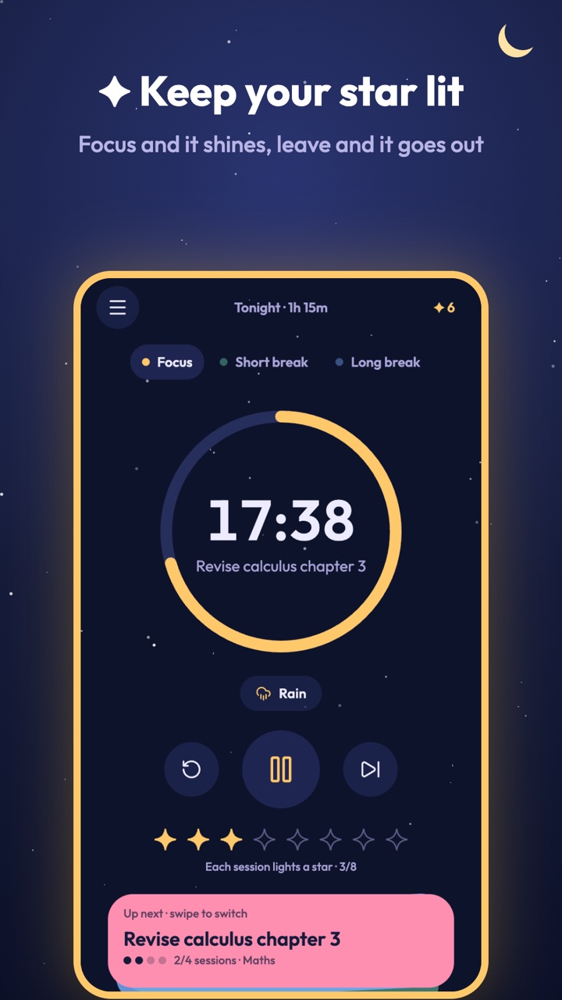
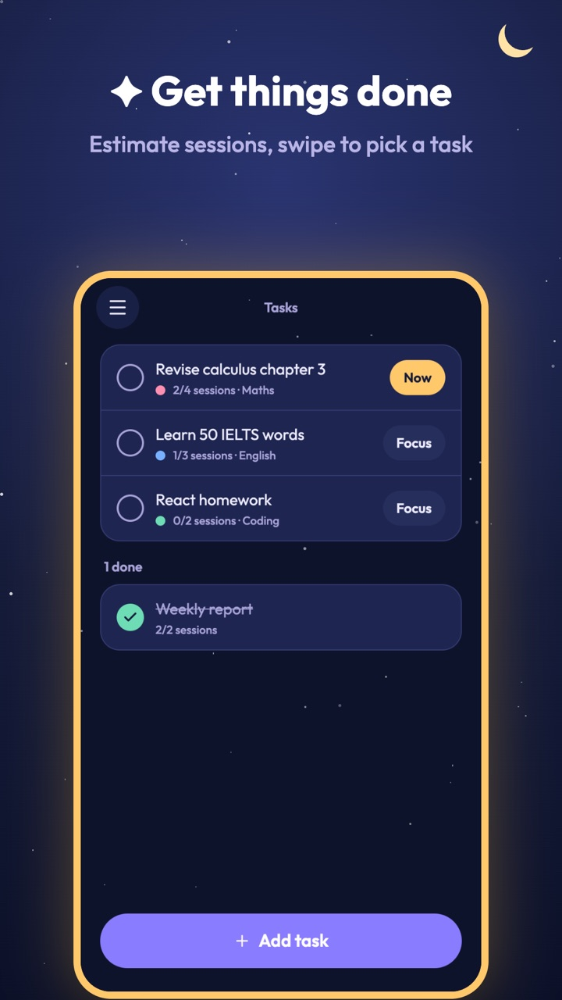
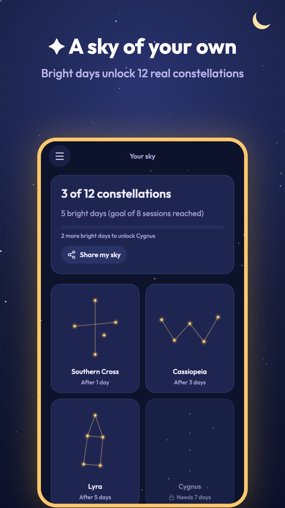
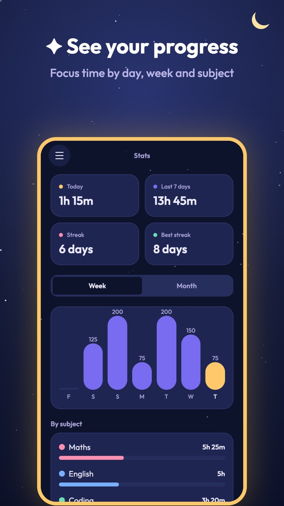

Focuswell: Focus Timer & Study
Focus without picking up your phone. Every session lights a star, leaving the app puts it out, and bright days unlock real constellations.




✦ Keep the star litPomodoro sessions with breaks; leave for more than 10 seconds and the star goes out.
📋 TasksEstimate sessions per task and swipe a card stack to pick what is next.
🎧 Focus soundsRain, café, campfire, ocean, white and brown noise, made just for Focuswell.
🌌 Your sky12 real constellations to unlock, plus stats by day, week and subject.
Your sessions stay on your phone
No account. Your sessions, tasks and subjects are stored only on your device and never sent to us. Read the privacy policy.
Contact
Questions, ideas or data requests: duckhanh181296@gmail.com